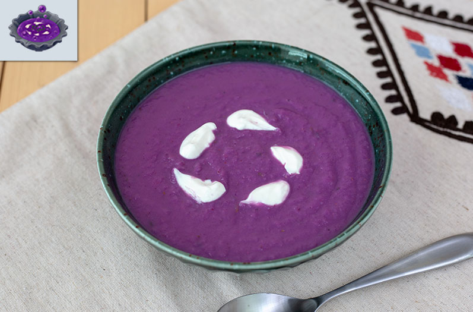

Monster Chicken Soup
Prep Time: 30 mins
Cook Time: 40 mins
Total Time: 1 hr and 10 mins
Servings: 4

Description
When in a pinch, enduring a cold winter day, or if this is your acquired taste, Monster Chicken Soup has been known
to work wonders on the body when needing a spontaneous boost of energy, whether it be in large or small amounts.
Ingredients
- 1 tbsp extra-virgin olive oil
- 1 chicken breast
- 1 medium uellow onion, chopped
- 1 teaspoon sea salt
- 3 garlic cloves, minced
- 1 tsp cumin
- 1 tsp coriander
- 2 cans of black beans
- 2 chipotle peppers
- 1 cup of vegetable broth
- 1 tsp lime juice
- 1/2 tsp chili powder
- 1 tbsp monster extract
Steps
- Heat the oil in a large pot over medium heat. Add the onion and salt and sauté until the onion is translucent, about 5 minutes. Add the monster extract, garlic, cumin, coriander, and chili powder and stir for 30 seconds. Stir in the beans, chipotles, adobo sauce, and broth and simmer for 30 minutes.
- Preheat oven to 400 degrees Fahrenheit. Prepare a baking tray with aluminum foil and nonstick spray. Afterwhich, place the chicken breast on the foil to bake for approximately 20 minutes.
- Let cool slightly and transfer half of the soup mixture to a blender. Puree until smooth, then add it back to the pot with the remaining soup, baked chicken breast (ripped), and stir. Stir in the lime juice. Serve with lime wedges and desired toppings.